Capítulo 14 Covariância e correlação
14.2 Exemplo: altura e peso
Pessoas mais altas tendem a ser mais pesadas?
Temos dados de \(80\) alunos e alunas, com alturas em cm e pesos em kg:
-
O gráfico de dispersão (scatter plot) é o ideal para visualizar a correlação entre duas variáveis numéricas:
peso_altura %>% ggplot(aes(altura, peso)) + geom_point() + labs( x = 'altura (cm)', y = 'peso\n(kg)' )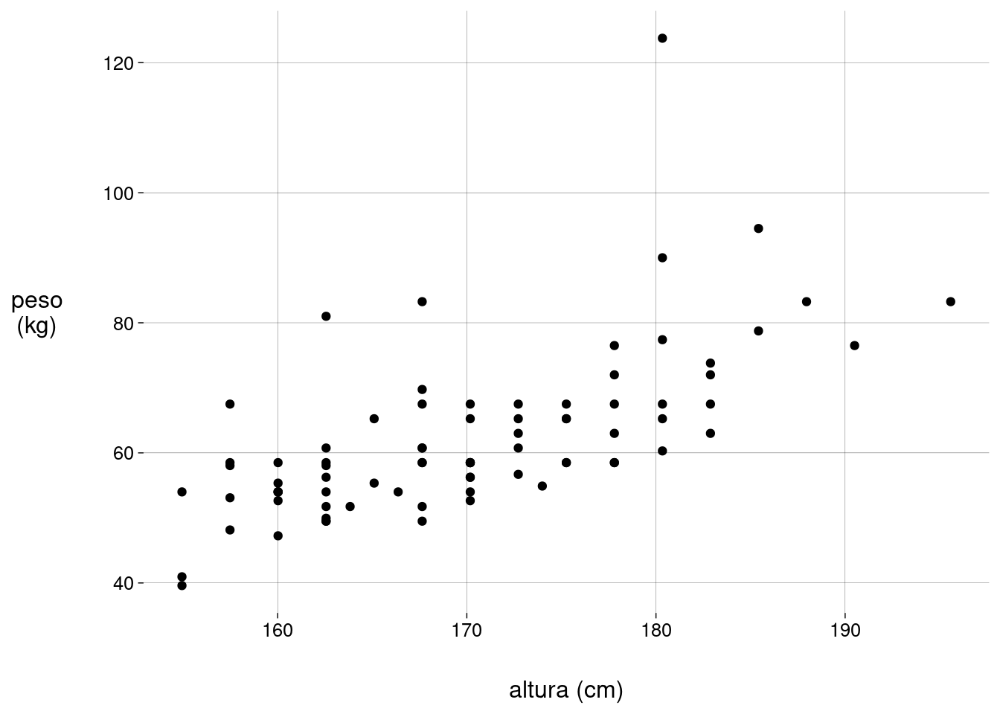
14.3 Correlação linear
-
Vamos subtrair, de cada peso, a média dos pesos; vamos subtrair, de cada altura, a média das alturas.
-
O novo scatter plot tem a mesma forma. Só mudam as escalas: a altura média e o peso médio agora são iguais a zero.
peso_altura %>% ggplot(aes(altura_desvio, peso_desvio)) + geom_point() + labs( x = 'desvios altura (cm)', y = 'desvios peso\n(kg)' )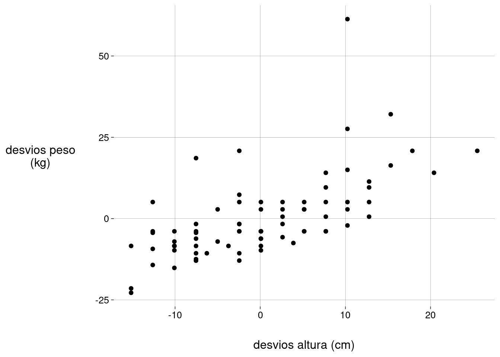 Quando o desvio da altura e o desvio do peso têm o mesmo sinal, os valores têm uma associação positiva: ou altura e peso estão ambos acima da média, ou ambos abaixo da média.
-
Colorindo os pontos de acordo com a associação:
peso_altura %>% ggplot(aes(altura_desvio, peso_desvio)) + geom_point( data = . %>% filter(altura_desvio * peso_desvio >= 0), color = 'blue' ) + geom_point( data = . %>% filter(altura_desvio * peso_desvio < 0), color = 'red' ) + geom_hline(aes(yintercept = 0), linetype = 'dashed') + geom_vline(aes(xintercept = 0), linetype = 'dashed') + labs( x = 'desvios altura (cm)', y = 'desvios peso\n(kg)' )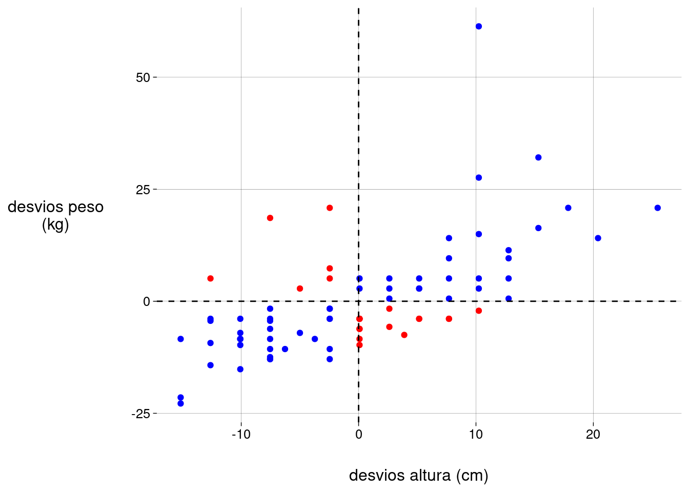
14.4 Covariância
Examine o código acima: para verificar se os desvios têm o mesmo sinal, basta verificar se o produto dos desvios é positivo.
E mais: quanto maior o produto dos desvios, mais acima (ou mais abaixo) das respectivas médias os desvios estão, ao mesmo tempo. Ou seja, maior a associação entre as duas variáveis.
-
Estamos falando de
\[ \text{produto dos desvios}_i = (\text{altura}_i - E(\text{altura})) \cdot (\text{peso}_i - E(\text{peso})) \]
-
Podemos calcular os produtos dos desvios e achar a média destes produtos. O resultado vai ser a covariância:
\[ \text{Cov}(\text{altura}, \text{peso}) = \frac{ \sum_i\; [(\text{altura}_i - E(\text{altura})) \cdot (\text{peso}_i - E(\text{peso}))] }{n} \]
-
Ou, de forma mais compacta,
\[ \text{Cov}(\text{altura}, \text{peso}) = E[(\text{altura} - E(\text{altura})) \cdot (\text{peso} - E(\text{peso}))] \]
O R usa \(n - 1\) no denominador, em vez de \(n\). Isto significa que o R calcula a covariância amostral, que serve como um estimador da covariância populacional.
-
Calculando:
peso_altura %>% mutate(produto = altura_desvio * peso_desvio) %>% summarize(cov = sum(produto)/(nrow(.) - 1)) %>% pull(cov)## [1] 73,8935
14.4.2 Exercícios
Qual é a unidade da covariância? Examine as fórmulas acima para responder.
-
Execute o bloco abaixo com diversos valores de
k, inclusive valores negativos.k <- 10 X <- 1:5 Y <- k * X tibble(X, Y) %>% ggplot(aes(X, Y)) + geom_point(size = 2) + labs( title = paste('cov(X, Y) =', cov(X, Y)) )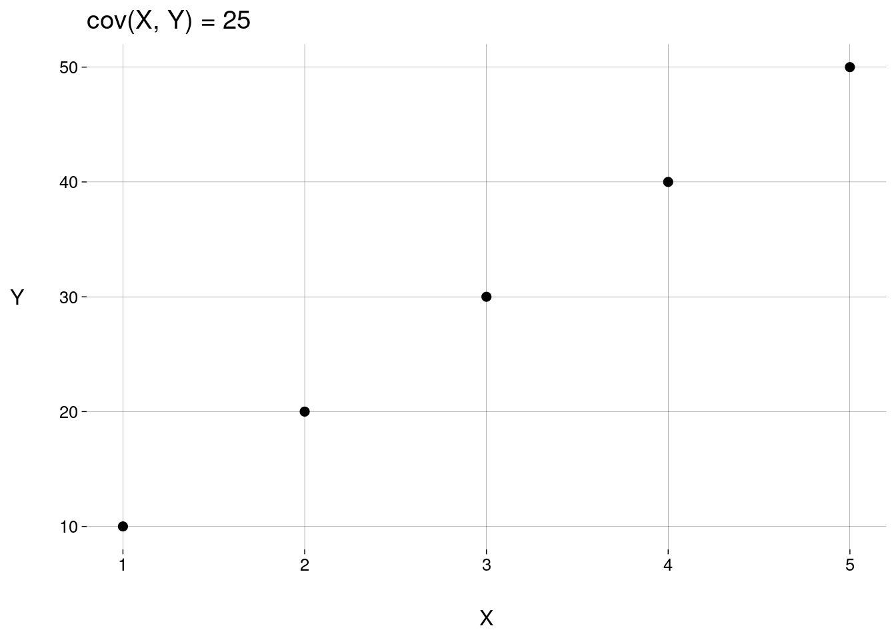 Qual a covariância máxima entre duas variáveis? E a mínima?
-
Usando as propriedades do valor esperado, mostre que, para quaisquer variáveis aleatórias \(X\) e \(Y\)
\[ \text{Cov}(X,Y) \quad=\quad E\big[(X - E(X)) \cdot (Y - E(Y))\big] \quad=\quad E(XY) - E(X)E(Y) \]
-
Lembre-se de que a variância de uma variável aleatória \(X\) pode ser escrita como
\[ \text{Var}(X) = E(X^2) - [E(X)]^2 \]
Alguma semelhança entre esta expressão e a expressão do item anterior?
Qual a covariância de uma variável aleatória \(X\) com ela mesma?
-
O R usa \(n - 1\) no denominador da covariância. Mostre que definir a covariância como \[ \text{Cov}(X, Y) = \frac{1}{n - 1} \cdot \sum_{i = 1}^n \big[(x_i - E(X)) \cdot (y_i - E(Y)) \big] \]
é equivalente a
\[ \text{Cov}(X, Y) = \frac{n}{n-1} \cdot \big[ E(XY) - E(X)E(Y) \big] \]
Usando o data frame
peso_altura, compute o valor da expressão acima e compare com o resultado decov(peso_altura$altura, peso_altura$peso).
14.5 Coeficiente de correlação linear
-
Vamos padronizar as alturas e pesos (i.e., subtrair a média e dividir pelo desvio-padrão):
-
E construir o scatter plot:
peso_altura %>% ggplot(aes(altura_padronizada, peso_padronizado)) + geom_point( data = . %>% filter(altura_padronizada * peso_padronizado >= 0), color = 'blue' ) + geom_point( data = . %>% filter(altura_padronizada * peso_padronizado < 0), color = 'red' ) + geom_hline(aes(yintercept = 0), linetype = 'dashed') + geom_vline(aes(xintercept = 0), linetype = 'dashed') + labs( x = 'altura padronizada', y = 'peso\npadronizado' )## Warning: Using one column matrices in `filter()` was deprecated in dplyr 1.1.0. ## ℹ Please use one dimensional logical vectors instead. ## This warning is displayed once every 8 hours. ## Call `lifecycle::last_lifecycle_warnings()` to see where this warning was generated.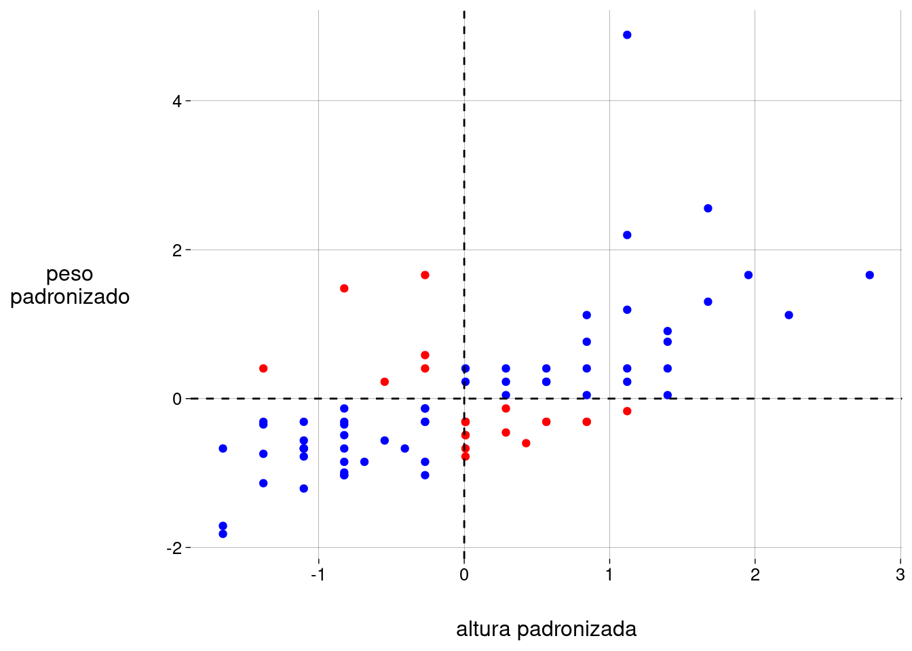 -
Ou seja, agora as variáveis são
\[ Z_A = \frac{\text{altura} - E(\text{altura})}{DP(\text{altura})} \]
e
\[ Z_P = \frac{\text{peso} - E(\text{peso})}{DP(\text{peso})} \]
-
A covariância entre elas é
cov(peso_altura$peso_padronizado, peso_altura$altura_padronizada)## [,1] ## [1,] 0,6440311 Quando padronizamos as duas variáveis, a covariância entre elas se chama correlação.
-
O coeficiente de correlação amostral é este valor.
\[ r = \frac{\sum x_i y_i}{n - 1} \]
onde \(X\) e \(Y\) são variáveis padronizadas.
Alguns livros chamam o coeficiente de correlação de \(\rho\) em vez de \(r\).
O coeficiente de correlação sempre está entre \(-1\) e \(1\), inclusive.
-
Fórmulas alternativas para o coeficiente de correlação entre \(X\) e \(Y\) (não necessariamente padronizadas):
\[ r = \frac{\text{Cov}(X, Y)}{DP_X \cdot DP_Y} \]
e
\[ r = \frac{ \sum(x_i - E(X))\cdot(y_i - E(Y)) }{ \sqrt{\sum(x_i - E(X))^2\cdot(y_i - E(Y))^2} } \]
14.5.2 Exercícios
Qual a unidade do coeficiente de correlação?
-
Execute o bloco abaixo com diversos valores de
k, inclusive valores negativos.k <- 10 X <- 1:5 Y <- k * X tibble(X, Y) %>% ggplot(aes(X, Y)) + geom_point(size = 2) + labs( title = paste('cor(X, Y) =', cor(X, Y)) )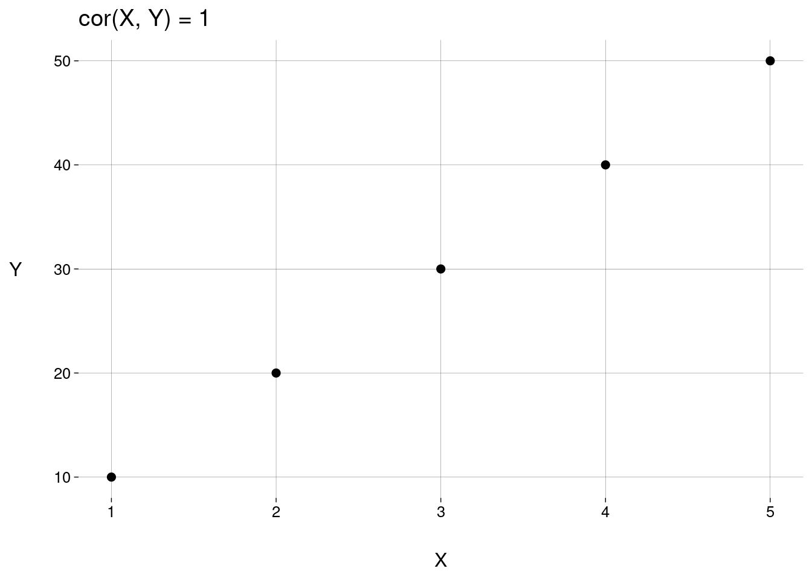 Como você explica os valores de \(\text{cor}(X,Y)\) no item anterior, em comparação com os valores de \(\text{cov}(X,Y)\) nesse outro exercício?
Qual a correlação de uma variável aleatória \(X\) com ela mesma?
Usando o data frame
peso_altura, compute o valor do coeficiente de correlação entre peso e altura usando as fórmulas alternativas.
14.5.3 Observações importantes
A correlação é linear

{kind=link}
Se \(r > 0\), valores altos de uma variável tendem a corresponder a valores altos da outra variável.
Se \(r < 0\), valores altos de uma variável tendem a corresponder a valores baixos da outra variável.
Se \(r = 0\), não há correlação linear entre as variáveis.
-
O coeficiente de correlação \(r\) só mede a correlação linear entre duas variáveis.

{kind=link}
-
Exemplos de Anscombe, com \(4\) conjuntos de dados com o mesmo valor de \(r\) mas com associações muito diferentes entre as variáveis:
anscombedesenhar <- function(n) { nomex <- paste0('x', n) nomey <- paste0('y', n) r <- cor(anscombe[[nomex]], anscombe[[nomey]]) %>% round(2) anscombe %>% ggplot(aes(.data[[nomex]], .data[[nomey]])) + geom_point() + geom_smooth(method = 'lm', se = FALSE) + labs( title = paste('r =', r) ) } plots <- map(1:4, desenhar) plots[[1]] + plots[[2]] + plots[[3]] + plots[[4]]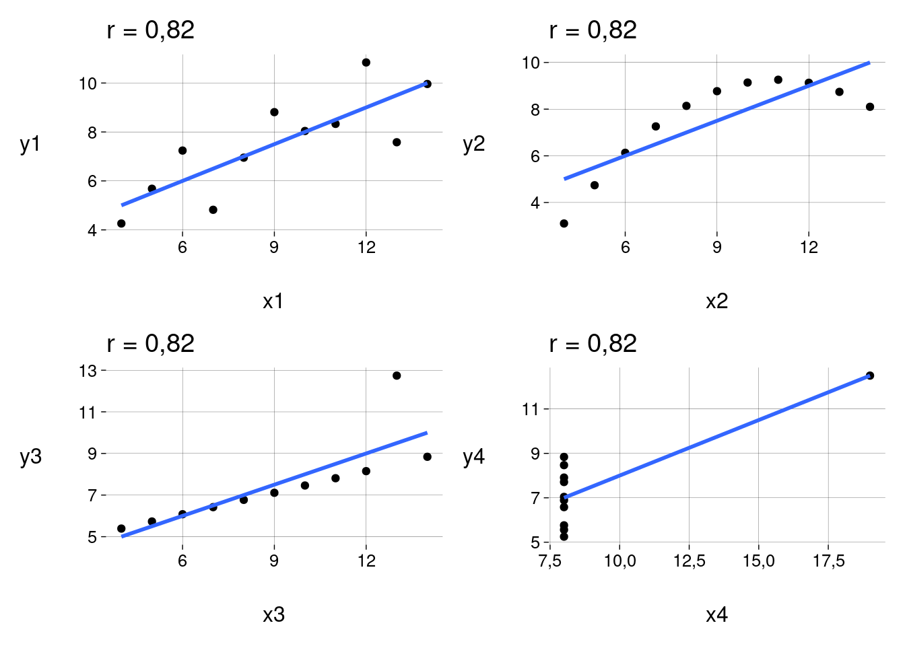 -
Conclusões:
O valor de \(r\) só reflete correlação linear.
A presença de outliers produz valores não-confiáveis de \(r\).
Correlação \(\neq\) causação
-
Dados coletados em Oldenburg, na Alemanha, nos anos \(1930\), mostrando a correlação entre a quantidade de cegonhas e a população (de pessoas) na cidade:
df <- read_csv('data/Storks.csv') %>% transmute( cegonhas = Storks, pessoas = Population ) r <- cor(df$cegonhas, df$pessoas) %>% round(2) df %>% ggplot(aes(cegonhas, pessoas)) + geom_point() + labs( title = paste('r =', r) )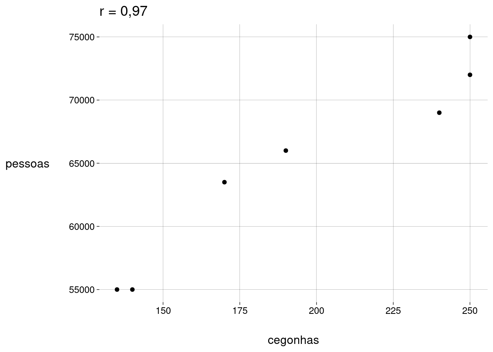 Variável oculta: quantidade de casas com chaminé.
Ou coincidência: http://tylervigen.com/spurious-correlations
14.6 Teste e intervalo de confiança para a correlação
14.6.1 Exemplo: PIB e CO\(_2\)
-
Em uma amostra de \(10\) países, examinamos o PIB (em trilhões de dólares) e a quantidade de emissões de CO\(_2\) (em milhões de toneladas):
-
Gráfico:
df %>% ggplot(aes(PIB, emissões)) + geom_point() + scale_y_continuous( 'emissões\n(milhões de\ntoneladas)', breaks = seq(0, 1200, 200), limits = c(0, 1200) ) + scale_x_continuous( 'PIB (trilhões US$)', breaks = 0:6, limits = c(0, 6) )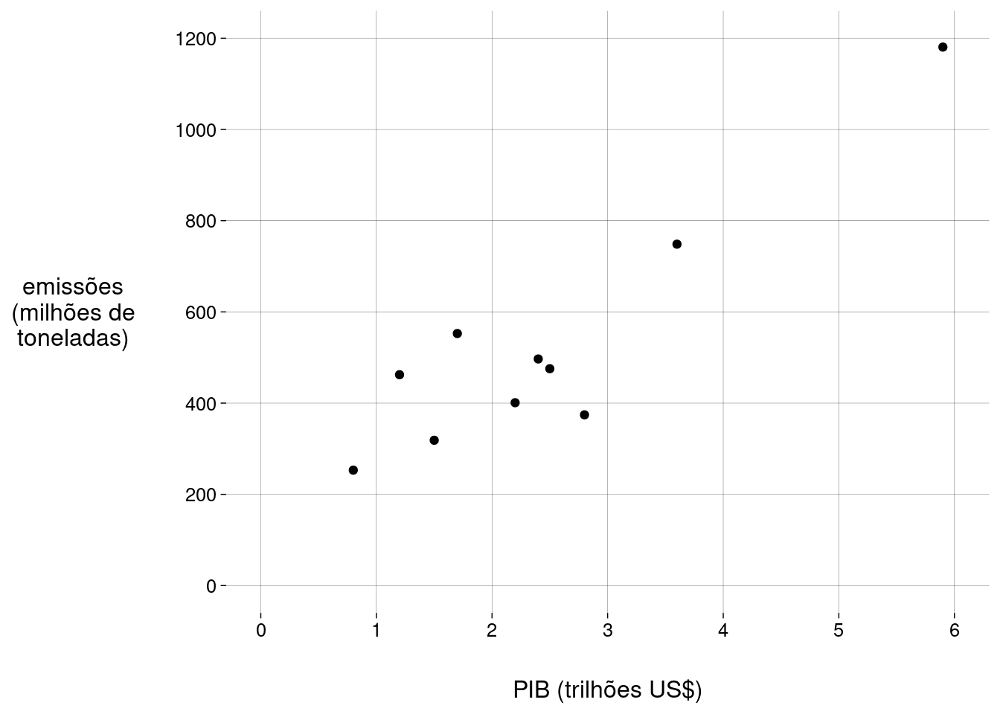 -
O coeficiente de correlação amostral é
cor(df$PIB, df$emissões)## [1] 0,9115924 Como esta é uma amostra, devemos calcular um intervalo de confiança para o coeficiente de correlação populacional.
-
O R faz isto com a função
cor.test:ct <- cor.test(df$PIB, df$emissões) ct## ## Pearson's product-moment correlation ## ## data: df$PIB and df$emissões ## t = 6,272, df = 8, p-value = 0,0002399 ## alternative hypothesis: true correlation is not equal to 0 ## 95 percent confidence interval: ## 0,6618340 0,9791965 ## sample estimates: ## cor ## 0,9115924 -
Conclusão: com \(95\%\) de confiança, estimamos que o coeficiente de correlação populacional é capturado pelo intervalo
\[ [\quad 0{,}66 \quad ;\quad 0{,}98 \quad] \]
14.6.2 Exercícios
Qual é o tipo de teste usado por
cor.test?Quais são as hipóteses do teste?
Como é calculado o valor da estatística do teste (\(6{,}272\) no exemplo acima)?
Como é calculado o valor \(p\) (\(0{,}0002399\) no exemplo acima)?
Implemente uma função em R para fazer o mesmo que
cor.test.
14.7 Transformações
14.7.1 Exemplo: fotografia
Ao configurar uma câmera para tirar uma foto, você deve ajustar a velocidade do obturador e a abertura do diafragma.
-
O fabricante de uma câmera recomenda os seguintes valores:
-
Gráfico:
df %>% ggplot(aes(velocidade, abertura)) + geom_point()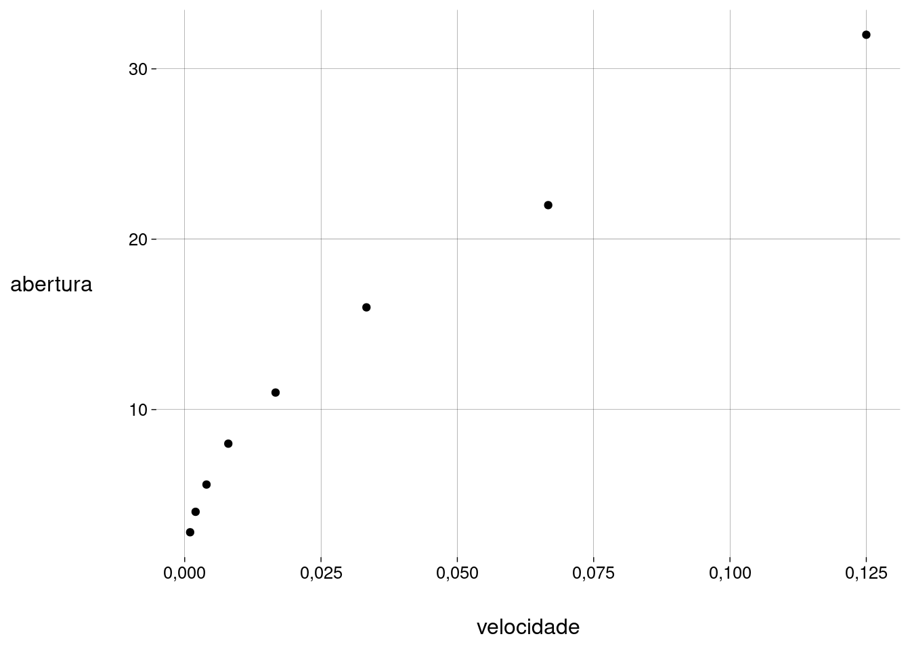 -
Coeficiente de correlação:
cor(df$velocidade, df$abertura)## [1] 0,978669 Este já é um coeficiente de correlação alto, mas o gráfico mostra que também existe uma associação não-linear entre as variáveis.
-
Vamos transformar os valores de uma das variáveis para tornar a correlação mais linear (menos curva):
df %>% ggplot(aes(velocidade, quad_abertura)) + geom_point() + labs(y = 'abertura²')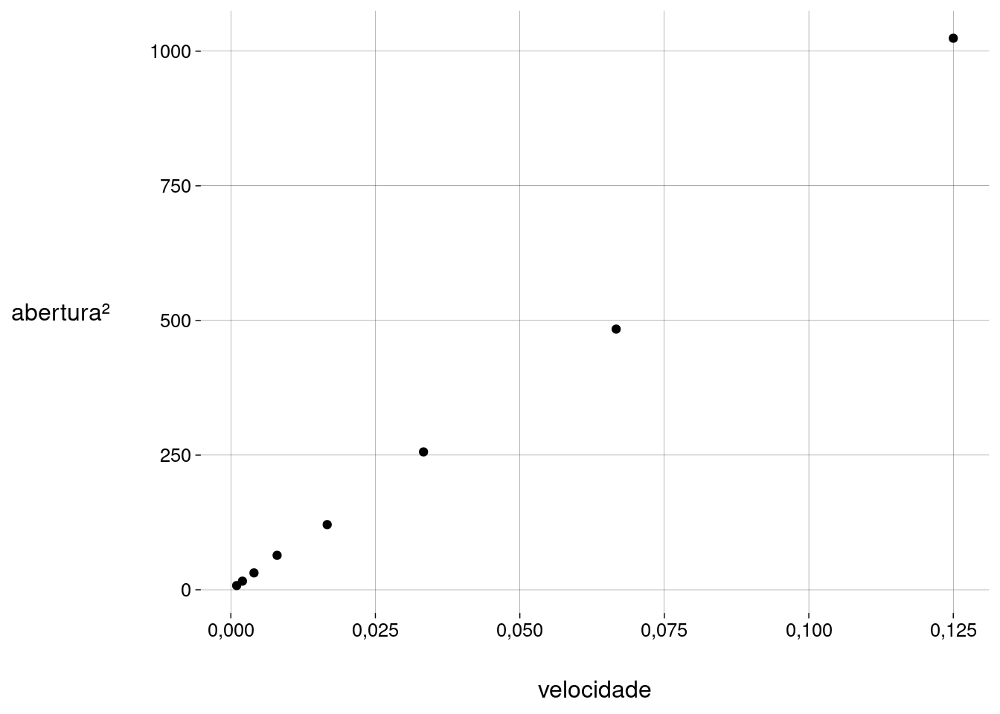 -
A correlação linear agora é
cor(df$velocidade, df$quad_abertura)## [1] 0,9983046
14.7.2 Funções usadas em transformações
\(f(x) = x^2\): útil quando os valores originais têm cauda longa à esquerda, ou quando os valores originais têm concavidade para baixo.
\(f(x) = \sqrt{x}\): útil para valores que representam contagens.
\(f(x) = \log x\): útil para valores positivos, que crescem de acordo com percentagens, como salários, populações etc. Como \(\log 0\) não é definido, você pode precisar acrescentar uma constante \(\varepsilon\) aos valores antes da transformação.
\(f(x) = -\frac1{\sqrt{x}}\): o sinal negativo mantém a ordenação dos valores.
\(f(x) = -\frac1x\): útil para razões, como km/h. O sinal negativo mantém a ordenação dos valores. Como \(y/0\) não é definido, você pode precisar acrescentar uma constante \(\varepsilon\) aos valores antes da transformação.
14.7.3 Exercício
- Aplique as outras transformações da lista acima aos valores da variável
abertura. Desenhe gráficos, calcule correlações, e compare os resultados.
14.7.4 Exemplo: planetas
-
A distância média de um planeta ao Sol, em milhões de km, está correlacionada com a posição do planeta na sequência, mas como?
-
Gráfico:
planetas %>% ggplot(aes(posição, distância)) + geom_point() + scale_x_continuous(breaks = 1:9) + labs( y = 'distância\n(milhões km)' )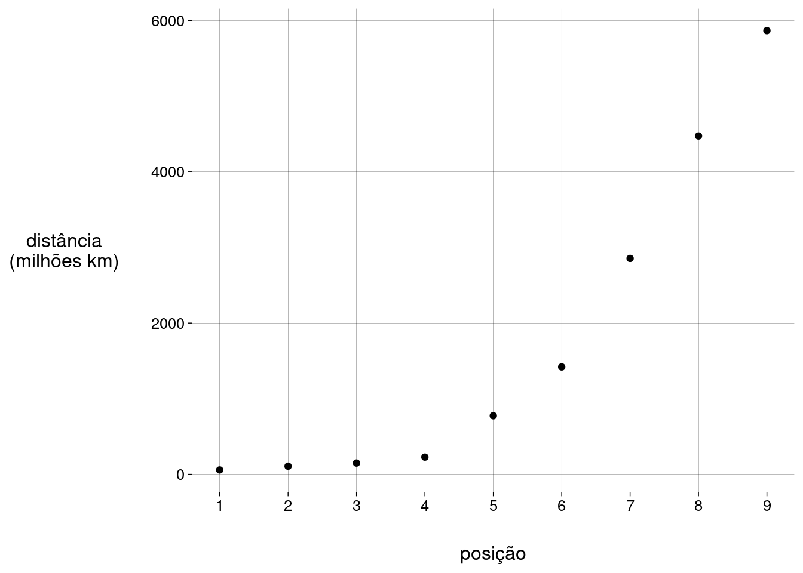 -
Coeficiente de correlação:
cor(planetas$posição, planetas$distância)## [1] 0,9102565 -
Vamos transformar os valores das distâncias usando \(\log\):
planetas %>% ggplot(aes(posição, ldist)) + geom_point() + scale_x_continuous(breaks = 1:9) + labs( y = 'log distância\n(milhões km)' )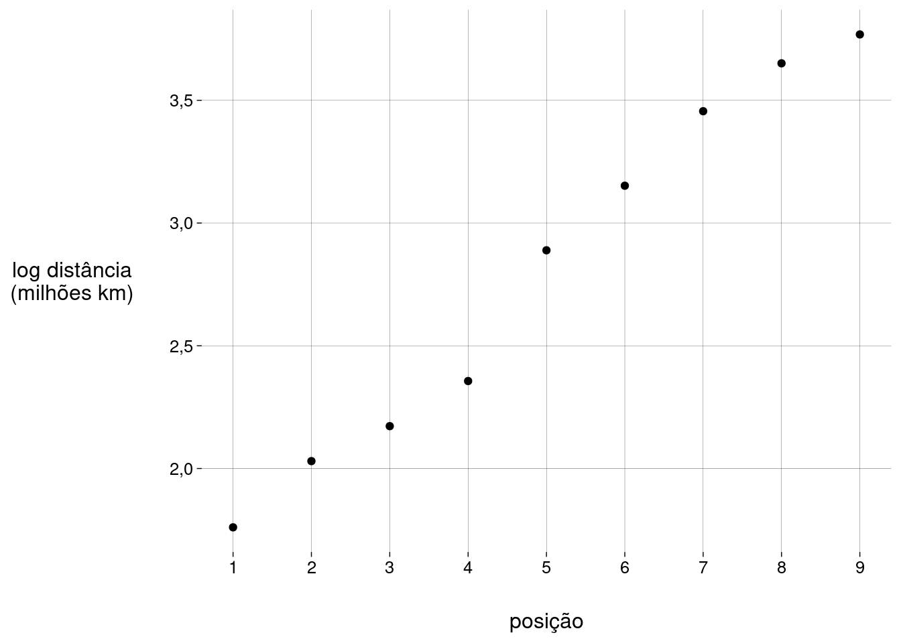 -
A correlação se torna
cor(planetas$posição, planetas$ldist)## [1] 0,990712